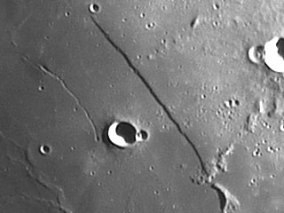

I always look forward to the time of month near first quarter moon. This is the time of the straight wall. These days it is more accurately called the Straight Fault. I rarely miss a look at this piece of lunar geology. On the lunar maps this feature is called Rupes Recta.
|  |
Looking at the Straight Fault made me think about faults on the earth. The moon's most prominent fault is only 68 miles or 110 km in length, about 580 feet (300 m) in depth and 1.5 miles (2.5 km) in width. The lower side of the fault is to the west and the westward moving terminator casts a deep shadow. In another two weeks, when the sun is on the other side of the fault, the Straight Fault will appear white. It's an amazing view through the eyepiece. Watching this feature throughout the month is a study in light, shadow and contrast. It's a study in geology too.
I was thinking about the Straight Fault while observing another planetary fault system recently - the San Andreas fault here in California. The San Andreas fault, separating the great continental slabs we call the North America and Pacific plates, is one of the most famous examples of a straight fault on earth. It is much longer than the Straight Fault on the moon. Its length is 750 miles or 1200 km. From the Mexico border to Cape Mendocino, north of San Francisco, it defines the state. This great gash in the earth spans two thirds of the length of our state of California. From the air it is unmistakable.
On the ground, this fault announces its presence as the two mighty plates collide. We feel this collision as earthquakes. You know from a visual glance that something wild is taking place on earth. To feel the earth move is frightening, yet fascinating.
This past weekend some friends gathered and walked on the earth's straight fault. On three separate days we spanned the fault. We walked on our earthly straight fault and observed the weird landscape as it slipped into the sea south of San Francisco at Mussel Rock near Skyline Drive in Daly City. This is the spot where the San Andreas fault enters the Pacific after a 500 mile journey across southern and central California. On the face of the bluff near Mussel Rock there is a massive landslide caused by rock caught and crushed in the fault zone. The face of the bluff is on the north side of the fault zone. Mussel Rock and the beach are on the south side of the fault zone. The rocks are jumbled yet different.
|
|
And on another day, we walked on the straight fault and saw where the rupture caused by the San Francisco earthquake of 1906 moved fences and offset creek flows. It was powerful and peaceful at the same time.
Earth and moon have straight fault geologic features. One is visible through a telescope, and one is visible under foot. Both take a trained eye and some imagination. Both are beautiful beyond words.